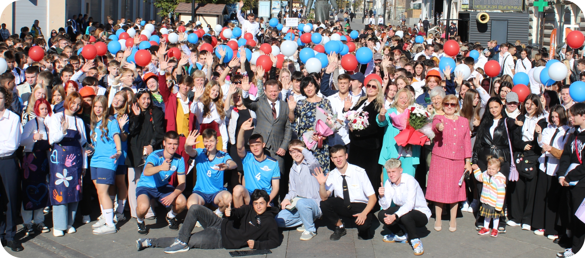
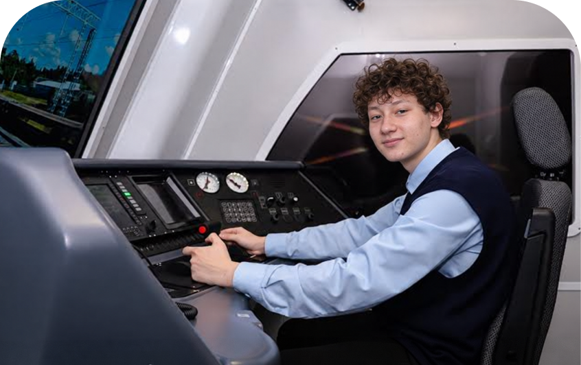
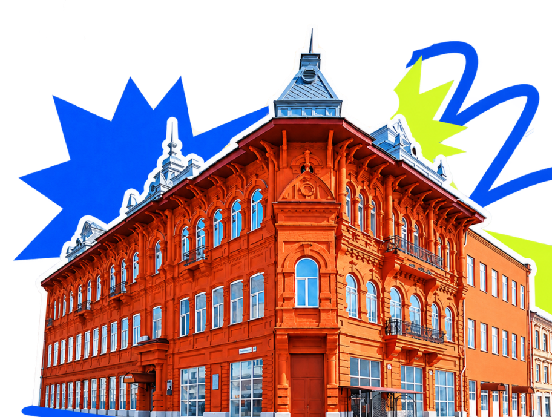

Педагогика
44.02.02
Преподавание в начальных классах
25 бюджетных мест 2027/28

Начни свой путь в Самарском
государственном колледже.
01 / НАЙДИ СВОЁ НАПРАВЛЕНИЕ
Технологии, творчество, педагогика и не только.
Выбери то, что интересно именно тебе.
25 бюджетных мест 2027/28

50 бюджетных мест 2027/28

Транспорт и логистика25 бюджетных мест 2027/28
25 бюджетных мест 2027/28
В этой подборке специальностей нет.
Посмотрите полный перечень направлений на сайте колледжа или измените поиск.

02 / ВСЁ ПРОЩЕ, ЧЕМ КАЖЕТСЯ
Выбери удобный способ подачи заявления.
Мы рядом на каждом этапе поступления.
Зарегистрируйся на сайте колледжа, заполни данные и прикрепи необходимые документы
Перейти в личный кабинет
Познакомься с колледжем и получи консультацию. Перед визитом уточни место и время приёма.
Посмотреть график и контактыПодай заявление онлайн через портал Госуслуг. Инструкция поможет разобраться с каждым шагом.
ТВОЙ МАРШРУТ ПОСТУПЛЕНИЯ
Изучи направления и условия приёма на интересующую программу.
Проверь актуальный перечень в правилах приёма.
Выбери удобный способ и следи за своим местом в рейтинге.
Принеси оригинал аттестата в приёмную комиссию до 15 августа.
03 / ОТ ОБРАЗОВАНИЯ — К ПРОФЕССИИ
“13 выпускников СГК уже в нашей команде. Мы знаем цену их подготовке — и ждём новых талантов!”
“95 баллов на демонстрационном экзамене — навыки, которые видны в деле. Таких специалистов мы ждём в команду!”
04 / ДАВАЙ ЗНАКОМИТЬСЯ
ЕСТЬ ВОПРОСЫ?
+7 (846) 332-59-49Телефон приёмной комиссии
Самара,
05 / ВСЁ ПОД РУКОЙ
ОТВЕТЫ НА ВОПРОСЫ
Выбери один из трёх способов: в личном кабинете колледжа, лично в приёмной комиссии или через Госуслуги. Подробнее о подаче заявления.
Актуальное положение заявления можно посмотреть в рейтинге абитуриентов.
Условия предоставления мест и порядок заселения уточни в приёмной комиссии по телефону +7 (846) 332-59-49.
Зачисление зависит от конкурсного отбора, приоритетов и выполнения условий приёма. Итоговый результат публикуется в приказах о зачислении.
Переходи в чат приёмной комиссии, чтобы задать свой вопрос.